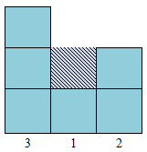
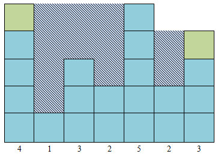

HDU4369. Water World II
内存限制：2000/1000 MS (Java/Others) 时间限制：65536/32768 K (Java/Others)
题目描述
The well known PC game engineer Kevin Flynn designed a new game:Water World II.Player can enters the Virtual Water World and build the world through this game.
Jack is the Administrator of Virtual World.He is responsible for water conservation project.Now Kevin gives him a big mission:building a reservoir made with thousands of mountain.

Every mountain's width is 1 unit and the hight is Hi .Mountain numbered from left to right.The valley between two mountains can hold water.
Jack can move the leftmost mountain to the rightmost for several times(include zero).
In order to complete the project,Kevin provide k unit building materials for Jack .Jack can add them to some mountain’s top(In order to maintain the stability of reservoir,The maximum height can not be changed).
Jack is the Administrator of Virtual World.He is responsible for water conservation project.Now Kevin gives him a big mission:building a reservoir made with thousands of mountain.
Every mountain's width is 1 unit and the hight is Hi .Mountain numbered from left to right.The valley between two mountains can hold water.
Jack can move the leftmost mountain to the rightmost for several times(include zero).
In order to complete the project,Kevin provide k unit building materials for Jack .Jack can add them to some mountain’s top(In order to maintain the stability of reservoir,The maximum height can not be changed).
输入格式
The input consists of several test cases(about 20).
For each case,there are two integer n,k in first line.(0<n<=10000,0<k<=10).
Then follow one line there are n integers indicate that the i-th mountain's height is Hi.the mountain start from left to right.(0<Hi<10000000)
For each case,there are two integer n,k in first line.(0<n<=10000,0<k<=10).
Then follow one line there are n integers indicate that the i-th mountain's height is Hi.the mountain start from left to right.(0<Hi<10000000)
输出格式
For each case print a integer number,indicate the maximum of water it can hold.
样例
样例输入
3 0
2 3 1
7 2
1 3 2 5 2 3 4样例输出
1
11
Hint
Case 1:

Case 2:
